첫 공실 등록하기
비어 있는 매물을 공실뉴스 지도와 내 물건접수웹페이지에 올립니다.
① 등록 화면 열기
왼쪽 ① 공실관리를 누르고 ② + 공실광고 등록을 누르세요.
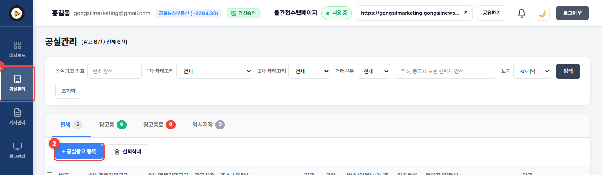
오른쪽 작성 체크리스트가 무엇이 남았는지 알려 줍니다. 모두 초록색이 되면 등록할 수 있습니다.
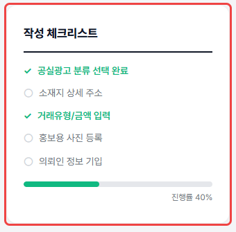
② 종류와 주소
① 매물 대분류를 고르고 ② 상세 종류를 고르세요. 예: 아파트·오피스텔 → 아파트
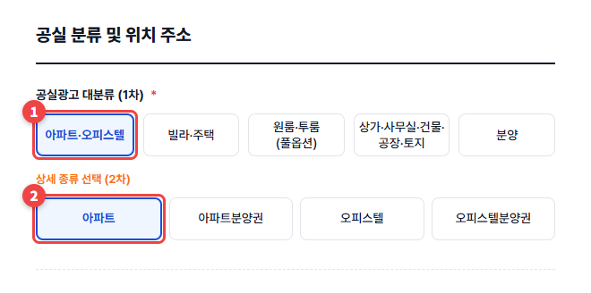
① 🔍 주소 먼저 검색을 눌러 주소를 고르세요. 시/도·구·동이 자동으로 들어갑니다. ② 주소를 어디까지 보여 줄지 고르세요.
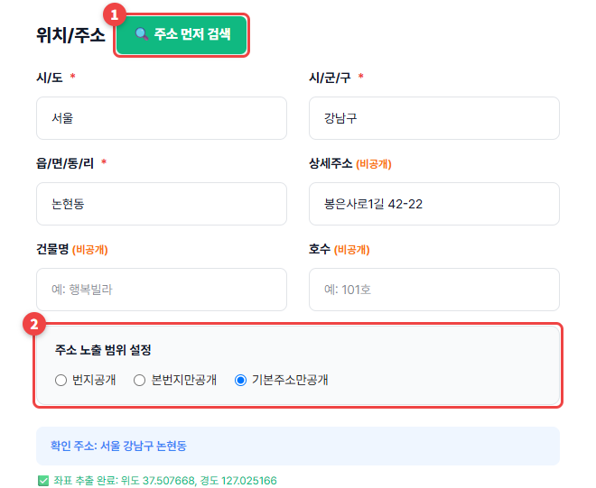
주소를 고르면 주변 병원·학교·지하철역 같은 인프라가 자동으로 채워집니다. 필요 없는 것은 ✕로 지우세요.
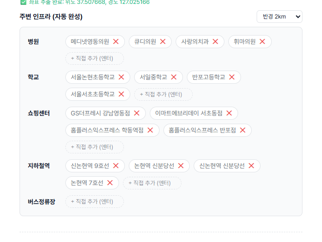
③ 금액과 면적
① 거래유형(매매·전세·월세·단기)을 고르고 ② ③ 금액을 만원 단위로 넣으세요. 아래 +1억, +500만 버튼으로 빠르게 넣을 수 있습니다.
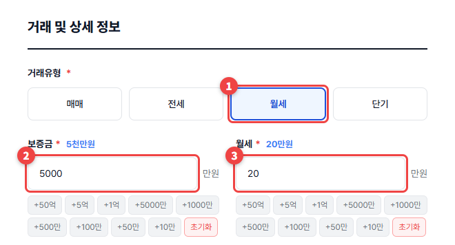
면적, 층, 방·욕실 개수, 주차, 입주가능일을 채우세요. 면적은 m²를 넣으면 평이 자동으로 계산됩니다.
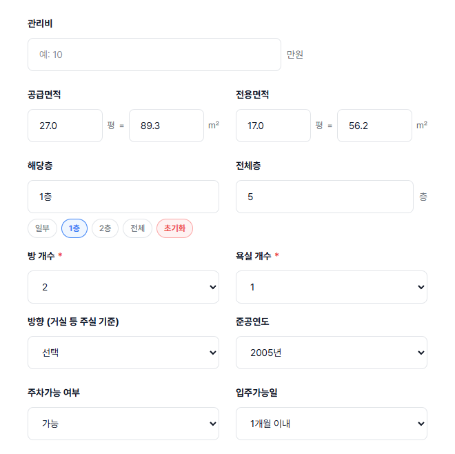
④ 설명과 사진
옵션과 테마(해시태그)를 눌러 고르세요. 고른 것은 초록색으로 바뀝니다.
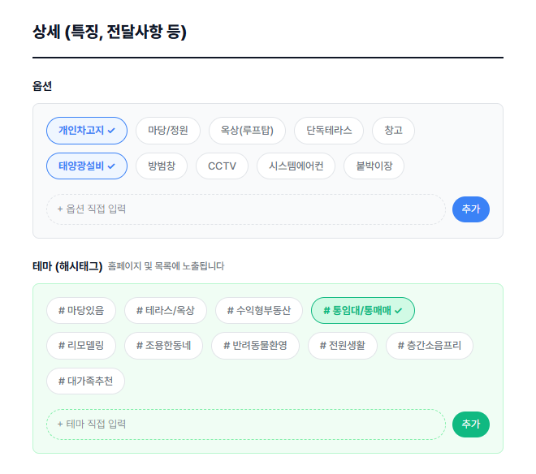
전달사항을 쓰세요. 쓰기 어려우면 ✨ AI초안글쓰기를 누르면 위에 넣은 정보로 초안을 써 줍니다. 초안은 꼭 읽어 보고 실제와 맞게 고쳐 주세요.
① 사진을 끌어다 놓거나 눌러서 올리세요. 최대 5장입니다. ② 전에 올린 사진은 포토DB에서 불러올 수 있습니다.
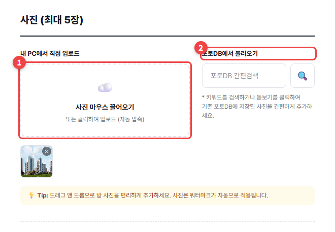
⑤ 노출과 등록
중개보수 지급 방식과 노출 범위를 고르세요. ① 부동산노출 + 일반인노출을 고르면 모두에게 보입니다.
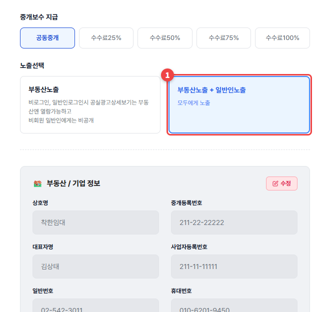
임대인 이름과 연락처를 넣으세요. 중개사님만 보는 비공개 메모라서 다른 사람에게는 보이지 않습니다.
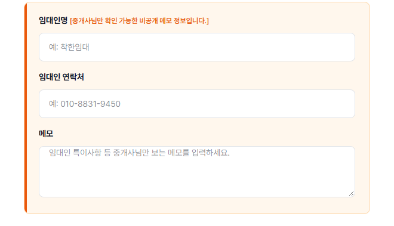
② 광고등록을 누르면 끝입니다. 다 못 썼으면 ① 💾 임시저장을 누르세요.
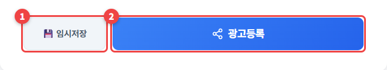
- 등록할 수 있는 공실 수는 등급마다 다릅니다. 내 한도는 정보설정 → 기본정보에서 확인하세요.
- 사진에는 공실뉴스 워터마크가 자동으로 들어갑니다.
- 임시저장한 공실은 공실관리의 임시저장 탭에서 이어서 쓸 수 있습니다.
지난번 매물과 비슷한데 처음부터 다 써야 하나요?
등록 화면 왼쪽 ↻ 이전 공실광고 불러오기로 전에 쓴 공실을 불러와 고치면 빠릅니다.
건물 층수·용도를 일일이 넣어야 하나요?
주소를 고르면 건축물대장에서 층수·주용도·승강기 등을 자동으로 채웁니다. 공공장부 기준이라 실제와 다를 수 있으니 한 번 확인해 주세요. 면적은 직접 넣어야 합니다.